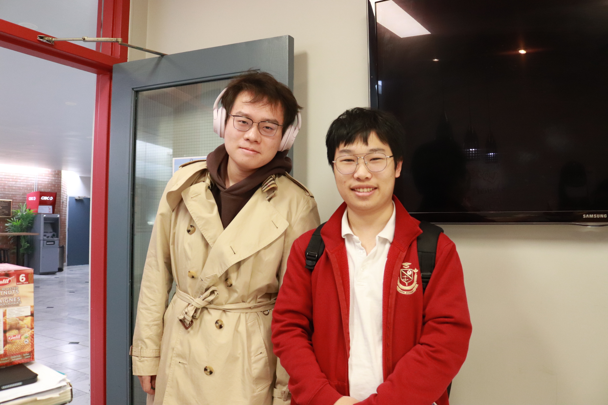

Welcome to my homepage
About myself
My name is Mark Shi. My Chinese name is Zhan Shi. Only my Chinese name have meaning in.

When I was worn, my parents wanted me to become a mayor. And my family name is Shi, which plus Zhan is Quiet like the noun mayor in Chinese.
My favourate music
My favourate music is Go West.
"Go West" is a song by American disco group Village People. This song is very inspiring for me to raise from bottom of life and raise to go abroad to pursue my dream.
Hobbies
I have a lot of hobbies.

Blind-watching anime is one of my faverate one.
What's more, I like
Hometown
I come from Nantong, Jiangsu Province.